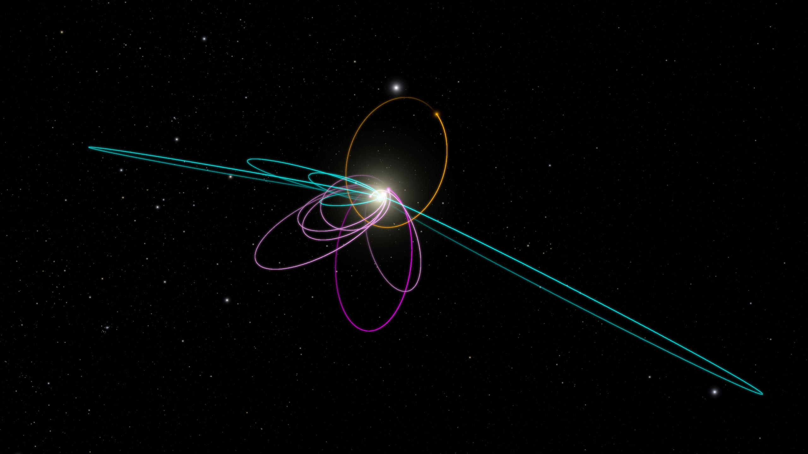

Caratéristiques orbitales Neptune:
- Demi-grand axe 1 426 700 000 km(9,5367 au)
- Aphélie 1 503 500 000 km(10,05 au)
- Périhélie 1 349 800 000 km(9,023 au)
- Circonférence orbitale 8 957 500 000 km (59,877 au)
- Excentricité 0,0539
- Période de révolution 10 754 d(≈ 29.44 a)
- Période synodique 378,039 d
- Vitesse orbitale moyenne 9,6407 km/s
- Vitesse orbitale maximale 10,182 km/s
- Vitesse orbitale minimale 9,141 km/s
- Inclinaison sur l’écliptique 2,486°
- Nœud ascendant 113,7°
- Argument du périhélie 338,94°

salut, ça va ? Moi ça va nickel
Il semble qu'ils soient allés sur la planète Saturne